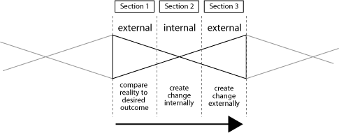

Introduction
One of the many things that makes humans unusual among all the life on our planet is our desire to make things better for our children. For other species there is little concern beyond survival and procreation because they don't really have much control over anything beyond that. They are born into the Earth's natural systems and are simply part of nature. They affect the physical environment in limited ways, building homes of various kinds like nests or underground dens, but if the environment is inhospitable, there is not much they can do about it. A fish born into a small evaporating pond in the midst of a drought doesn't start drilling a well to replenish the depeleting water. They struggle to survive and if they are lucky, they reproduce and their offspring do the same thing.
Humans are different. For better or for worse, we take a more active role in creating our environment. We are born into a human world that was built within and on top of the natural environment by our ancestors. Generation after generation has built this physical world so tailored to our human needs that we can easily forget that we are indeed still part of nature.
Whether we are struggling to survive or living in relative comfort, we find meaning in working to create opportunities for our children that we didn't have. That might take the form of working two jobs to fund our kid's college education or working to feed hungry children in developing nations. We are not limited to wanting to help our biological offspring; we are wired to care about all of humanity's children. They are literally our future as a species.
Most of us would agree that we would like to leave the world a better place than it was when we came into it. That sounds harmless enough, but it begs the question "what do you mean by better?" Some people see segregation, genocide, or terrorism as the path to a better world. What we mean by "better" is something that we should look at carefully.
Unfortunately, defining what we mean by better is not very easy. Our sense of "better" is largely intuitive and while we may know it when we see it, it can be hard to define up front in any detail. Often, we define it in terms of stopping something that we don't like or agree with: "stop global warming" or "save the rainforests" which is just another way of saying "stop destroying the rainforests."
World That Works is my attempt to define what it means to create a better world in a way that accommodates all humanity. I have tried to take an objective view and rise above any poitical agenda or the urgent topics of the day and focus on general principles that might stand the test of time. It is a basic assertion in the book that we are all in his together and that a World That Works is one that works for everyone. In the past, it may have been possible to create isolated societies that approached a kind of Utopia, but this is a global community now and we can no longer take such a small view of the problem. It will have to be success for everyone or we will just have more of the same: more wars, more poverty, more suffering.
It is my hope that World That Works will also serve as a guide for how to go about creating that better world. If you wonder if you have what it takes to make a difference, I hope this book will assure you that your contribution matters. If you are already working toward building a better world, I hope that his book will help clarify where your efforts fit into the larger scheme of things and help make you more effective.
No one wants to spend their life in an effort that proves to be useless or worse, creates more problems than it solves. We can learn from our successes as well as our mistakes, and we can begin to identify the concepts that define a world that promotes peace and prosperity for everyone. In this book, those concepts take the form of patterns.
These patterns can act as a guide to describe what a better world could look like and how we might, as individuals, make contributions that help bring about that world.
A World That Works
The world is a set of human inventions that are intended to improve our ability to survive and thrive on Earth; it is working well for some people and failing completely for others.
For the purposes of this book, "Earth" and "World" are two distinct things. Earth consists of the physical planet and its natural systems. The World is made up of objects and systems designed and built by humans. Earth and the World are each affected by the other in important ways, so they are not independent from one another, but in the context of an exploration of how we can create a better world, it can be useful to note that we are not trying to improve Earth directly, other than restoring what we have already destroyed: we are looking to improve the human inventions that have been superimposed upon Earth.
As a human-designed system, the human world is something we can change in an attempt to improve it. As it is now, it works for some people, meaning some people are enjoying a certain amount of success as a result of the current design, but it doesn't work for everyone. This pattern states that we should be striving for a world that works for everyone, not just a world that works for our country, state, community or family. Why we think this is possible and how it might happen are the subjects of other patterns.
The human world, as currently designed, is rather dysfunctional. As a result, we have to learn how to deal with its idiosyncrasies, and mold our behavior to cope with it. It's similar to having a car that is old and starting to fall apart. You learn to deal with the window that sticks and the door handle that's broken. We can learn how to deal with these things, but it takes a great deal more energy and attention than if we were driving a new, well-designed car that simply works.
The world is a complex system with many parts interacting in myriad ways to create the working world we see. People trying to understand the dynamics of complex systems have identified a phenomenon they call emergence. Simply put, a complex system is more than the sum of its parts; it behaves in ways that are unpredictable by looking at just the parts of the system. Buckminster Fuller called this phenomenon synergy.
The world is so complex, we can't know for sure what a World That Works will look like until it emerges. Part of the question is how do we encourage that property to emerge? The answer is that we can work to remove or replace systems that are actively working against success for all humanity while working to ensure that we don't create new ones. This is not an easy task. The world is dynamic and changing and some of these systems do great things for the people they help. We don't want to simply throw them away; we have to redesign them or rethink them so that they can do even more.
I'm speaking very generally of these systems now, but they are innumerable in the special cases of our lives: governments and government programs, laws, financial systems, educational institutions, transportation systems, communication technologies, urban plans, homes, offices, businesses, even social norms and the ways we think about the world around us. In other words, the human world that we live in. No part of it is perfect; all the parts influence the whole in unintended and undesirable ways, and they all need our constant attention if we want to create a World that Works.
Why a Pattern Language?
I have chosen to put these ideas into the form of a pattern language for a number of reasons, but the main reason is that it embodies the principles of good communication as outlined in a number of patterns.
How the Book is Organized
The arrangement of patterns follows a process that Buckminster Fuller called "teleology." It's the idea that change follows a particular cycle, a wave pattern of sorts. In the first phase, we perceive the world, trying to understand it in meaningful ways. In the second phase we go inward and try to envision a better way to do it. We literally change the model of the world we have within us to include our new designs and ideas. In the last phase we go outward again, creating the change in the external world. By reducing our ideas to practice, we test our internal model of the world and see if what works in our minds actually works in the physical world. The changed world then becomes our starting point for the next wave or cycle.
We go through this process all the time as we recreate our world to better suit us. When you arrange the furniture in a room, you look at the current layout to begin with, imagine what might work better, then move the furniture to match your inner vision. Once it's moved, you see whether it works or not and make further adjustments as needed. We can do the same thing on a larger scale and affect the human-designed world with our ideas, rearranging the furniture of civilization to create a world that works for everyone.
The first section of the book describes the patterns in the human designed world that seem to move us in the right direction. It's important to understand that these patterns reflect the world as it is, at least in part. Humans have tried all kinds of approaches to creating a better world, and these patterns are an attempt to capture the ones that seem to be working.
The second section contains patterns of thinking that we can use as individuals to see the world as objectively as possible and identify opportunities for improvement.
The third section contains patterns that describe how we can take our unique perspective and experiences and use them to create a change in the world that moves all of us toward a future in which everyone is successful.
A word about certainty
One of the patterns in this book is called "Knowledge as Hypothosis" and it proposes that we need to treat what we think we know, especially about human behavior and motives, as just an educated guess. That is the approach that I take throughout the book in the patterns that I propose. Ideally the reader will take the statements made not as declarations of Truth, but as bold propositions made in the spirit of exploration.
Some of the ideas in this book are pretty well established and have enough evidence supporting them that I feel I can indicate them as being "Probably True". These patterns are marked with two asterisks (**) in the title. A single asterisk (*) indicates less certainty, maybe "Probably At Least Partially True". Patterns with no asterisk in the title indicate that I am much less certain and could be described as "Seems True Enough That It Made It Into The Book".
Notes
I stated my goal at one point this way: To establish a knowledge resource system that makes available to all humanity, humanity's best current collective knowledge of how to make the world work for 100% of humanity, presented in the best form to ensure the most people will be able to use the information.
About patterns: each pattern is part of a large whole and can be combined with other patterns in a myriad of ways. It is this flexibility that makes patterns so powerful.